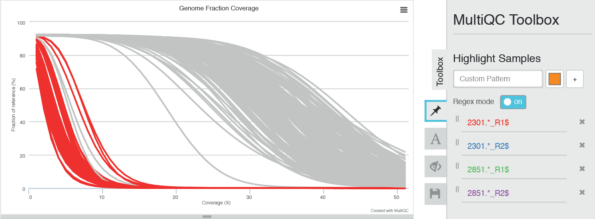
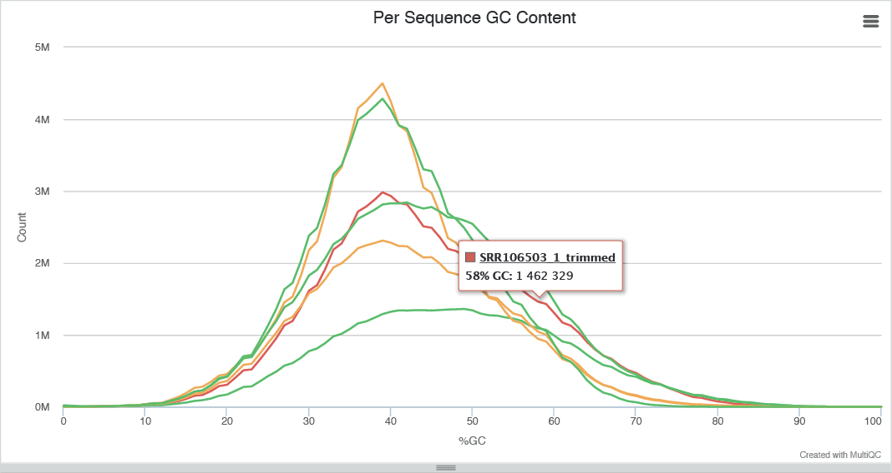

> Fig 1. Top of a typical MultiQC report. The general statistics table > can be seen with metrics gathered across multiple analysis outputs for each sample.
> Fig 1. Top of a typical MultiQC report. The general statistics table > can be seen with metrics gathered across multiple analysis outputs for each sample.1 Department of Biochemistry and Biophysics, Science for Life Laboratory, Stockholm University, Stockholm 106 91, Sweden
2 Science for Life Laboratory, School of Biotechnology, Division of Gene Technology, Royal Institute of Technology, Stockholm, Sweden
_* To whom correspondence should be addressed._
MultiQC_NGI to fetch sample name info and store rRNA / insert size info.Fast and accurate quality control is essential for studies involving next-generation sequencing data. Numerous tools exist to quantify QC metrics, but assessing analysis results across an entire project can be time consuming and error prone. For example, it is not possible to interpret hundreds of FastQC reports; simply picking a handful may miss group patterns or outlier samples.
We present MultiQC, a tool to create a single report with interactive plots generated for multiple analyses across many samples. Reports enable global trends to be quickly visualized and outlier samples identified. MultiQC can plot data from many common bioinformatics tools and is built to allow easy extension and customization. It requires little or no configuration, is run on the command line and generates a single stand-alone HTML report.
The package is available with an MIT license through GitHub and the Python Package Index. Example reports, documentation and downloads are available at: http://multiqc.info
Advances in next-generation sequencing are leading to an avalanche of data. Whilst opening doors to new analysis types and experimental designs, this provides a challenge for bioinformaticians. A typical analysis can yield many log files and analysis metrics. This leads to the complex and time consuming task of finding and compiling statistics from numerous reports and log files for every sample.
MultiQC addresses this problem by searching an analysis directory for any recognized content and creating a single summary report. It is a general use tool, designed to parse log files from multiple programs and create plots with overlaid data. This provides a fast method to scan key statistics for a project quickly and easily. Shared plots allow accurate comparison between samples, which is not possible when switching between different reports. It produces a stand-alone HTML report with embedded interactive plots and tools.
MultiQC is suitable for integration with existing workflows with little to no configuration. Its routine use can improve data interpretation and save a great deal of time for bioinformaticians.
> Fig 1. Top of a typical MultiQC report. The general statistics table > can be seen with metrics gathered across multiple analysis outputs for each sample.
MultiQC is run on the command line - specified paths are searched recursively for any recognized files and a report is compiled. Reports are HTML files which can be opened in any modern web browser. Plots are resizable and interactive, some with click and drag zooming. A toolbox allows sample renaming, highlighting and hiding. Plots can be exported in a range of publication-ready formats, including PNG, SVG and PDF. Parsed data is also saved as tab delimited text files for downstream use. This makes MultiQC especially useful for use with single cell data, which can have thousands of samples.
MultiQC is run in the same way for any analysis type. Each module will search for recognised log files and produce no output if none are found, meaning that little to no configuration is required. At the time of writing, MultiQC comes with modules to parse logs from a range of tools including FastQC, FastQ Screen, Cutadapt, Bowtie 1/2, STAR, Tophat, Bismark, Picard, Preseq, Subread featureCounts and Qualimap.
We have used MultiQC extensively during technique development projects. The top table of General statistics makes it easy to compare alignment and duplication scores, along with other key metrics (Fig 1). Groups of samples processed using different methods can be highlighted with colours in the report. These highlights are shared across all plots, allowing patterns to be quickly identified across metrics (Fig 2). For example, we have plotted insert sizes measured on the bioanalyzer prior to sequencing and compared these calculated by Picard after alignment to test sequencing length bias. We find the ease of sharing reports between collaborators particularly useful.
 > Figure 2. Example of an overlay plot. GC content data from FastQC is overlayed, with > datasets coloured by FastQC status.
MultiQC is ideal for use in a high throughput sequencing facility due to its flexibility and ease of use. It is very easy to implement at the end of any analysis pipeline and reports give the overview required to spot failing samples. Modules written for FastQC and FastQ Screen make failing samples stand out, reducing time spent on QC and the chance of manual error (Fig 3). Templates allow specific branding and custom messages to be added to reports, making MultiQC an ideal base for automated delivery reports.
MultiQC is structured to work with plugins, which can give additional functionality. For example, we have written the MultiQC_NGI plugin which fetches metadata from our LIMS and stores summary data generated by MultiQC. This allows tight integration with our process flow and a simple way to collect bulk analytics data with which we can monitor the performance of our sequencing pipelines (ribosomal RNA depletion efficiencies, WG sequencing insert sizes and so on). MultiQC can print output to a standard out stream, allowing it to be integrated into LIMS systems for real time report generation. This has been recently implemented by Babraham Bioinformatics within the Sierra LIMS (http://www.bioinformatics.babraham.ac.uk/projects/sierra/).
MultiQC is able to parse data for a large projects in a single run. Whilst report plots can become impractical, log files for many thousands of samples can be parsed in minutes. MultiQC stores this data in tab-delimited files which can be used in downstream analysis. This is useful when processing single cell data - quality control metrics can be loaded into analysis scripts and data sets not meeting required criteria can be programmatically removed.
 > Figure 3. Sample highlighting shown with coverage decay plots from Qualimap. The MultiQC > toolbox can be seen on the right with regular expression pattern matching for sample > names.
PE responsible for the idea, the package and the manuscript. MM helped with some code reorganization. SL and MK directed the research group. The authors would like to thank Guillermo Carrasco, Robin Andeer, Johannes Alneberg and Remi Ohlsson for useful discussion. Guillermo Carrasco was responsible for the first version of the Qualimap module.
This work was funded by...